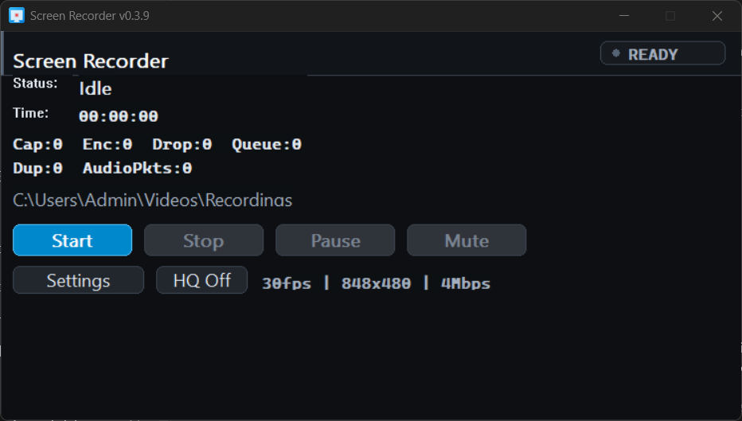

ScreenRecorder is a native Win32 recorder built for low overhead capture, Intel GPU hardware acceleration,
system audio, microphone audio, and an optional camera overlay. Download the Windows package and start
recording without a cloud account.
Free & Open Source
Windows 10/11 x64
Local Recording

Dark native interface
Low-distraction controls with a clear recording status pill.
Ready
Download the Right Package
ScreenRecorder is currently packaged for Windows. The download button automatically points to the latest
GitHub release asset when the release API is available, with a safe fallback to the releases page.
Windows x64
ZIP package containing the desktop recorder executable.
Latest Release
Best for Intel laptops and Windows desktops with Windows Graphics Capture support.
Asset: ScreenRecorder-*-windows-x64.zip
Release details load in the browser when GitHub is reachable.
The app is intentionally small and native: capture with Windows Graphics Capture, process frames on D3D11,
encode through Media Foundation, and keep fallbacks visible.
Hardware-First Encoding
Prefers the Intel-capable hardware path when available and keeps software fallback behavior intact.
Mic & System Audio
Captures microphone and desktop audio through native Windows audio APIs for local MP4 output.
Camera Overlay
Optional floating camera preview with default efficiency tuning and an HQ-capable profile.
Private by Default
No account is required. Recordings and diagnostics stay on the machine.
Simple Controls
Start, stop, pause, mute, settings, and High Quality mode are visible in the first window.
Crash Recovery
Partial file recovery and low-disk safety checks reduce the chance of losing a recording.
Choose Battery or Quality
The recorder keeps the default profile efficient for laptops and offers High Quality mode when sharpness is
the priority.
Default Profile
Balanced for low memory pressure, lower disk usage, and better battery life during normal recordings.
30 fps848x480 target4 MbpsBattery-aware
High Quality Mode
Higher resolution and bitrate for sharper screen captures when you want quality over file size.